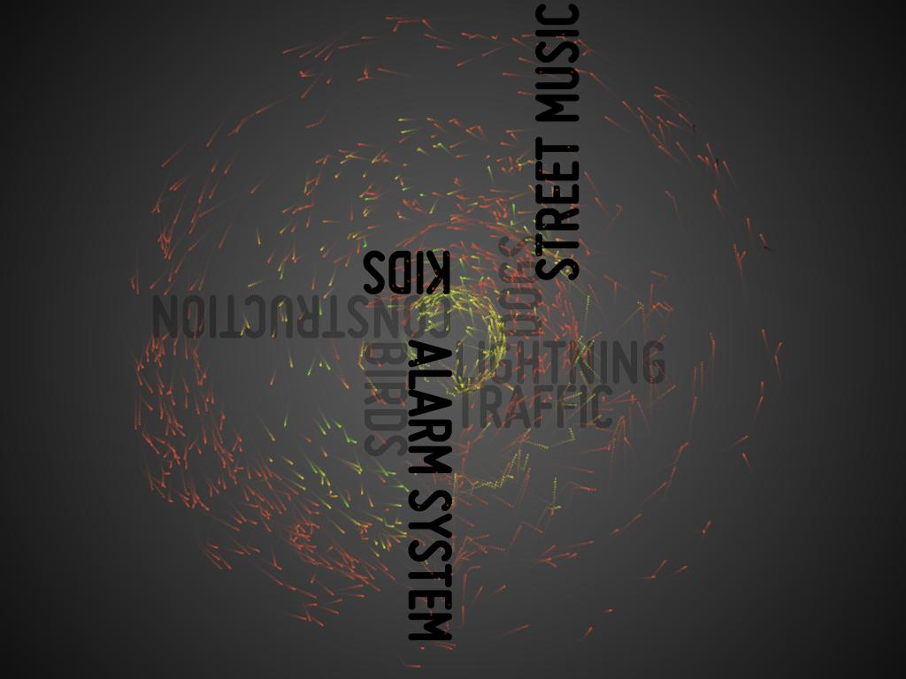
T-M.N UELaerm
a Project by: PDXIII & fabiantheblind
fhp Urbane Ebenen by till nagel
google translate:
Interface Design Advanced Media
2135 Summer 2010
This course will be presented real and virtual levels in the urban context on the Surface table using interactive Geovisualiserungen.
interpretation
how do people react on noise?
Different people react in diffrent ways.
On construction sounds or children or traffic.
How can the perception of noise be messured?
Is there a value that oscillates between anoying and nice?
And there were more questions.
How could this be meassured?
With survey (only in german) we tried to get our hands on some data. At this moment it's the perception of 39 people. But there is no live-stream.
How to visualise that in multitouch?
Based on the data we got from the survey we build some graphs and tried to understand. Of course are some things obvious. Like the perception of traffic in general. But some smaller differences are interesting.
people like children a bit more than dogs. But only at daytime.
And everybody loves lightning and thunder at night.
Finaly ( and because we were eager to make something beautiful ) we choose a metaphor to explain the data.
The always flowing circle as an image for the never stopping life in the city.
The particle, as the person wo reacts on sound, has to make his way throug space. the typo obstacles are noises that interfear with the mood of the masses.
We splitted this in three different spaces.
Public space ( the inner ring) , private space ( in the middle ) and workspace ( the outter ring ) . We also made a difference between the perception on day and night.
See the showreel / documentation video here.
See and download the project presentation as .pdf here.
What is the next step?
The next step would be implementing sound. There are some ideas around like making a sound layover controlled by the active objects there size and there position. But nothing really final.
PDXIII
fabiantheblind
the 41 Confusion in the Year 3175
berlin // germany
europe // northern hem.
planet earth // sol3
solarsystem
milkyway galaxy
local supercluster
Startdate 63973.6
technical mambo jambo
language: Java / Processing
IDE: Eclipse / Processing
with help: by Till Nagel
The classes in the package particleSystem are mostly based on Daniel Shiffman's Nature of Code Examples
There is also a (unfinished) JavaDoc
see the code @Google Code
or @GitHub
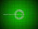
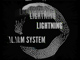
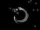
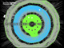
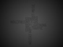
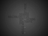
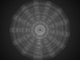
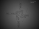
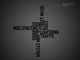
 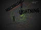
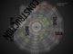
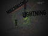
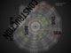
{kind=link}
{kind=link}
{kind=link}
{kind=link}
{kind=link}
{kind=link}
{kind=link}
{kind=link}
{kind=link}
{kind=link}

{kind=link}
{kind=link}